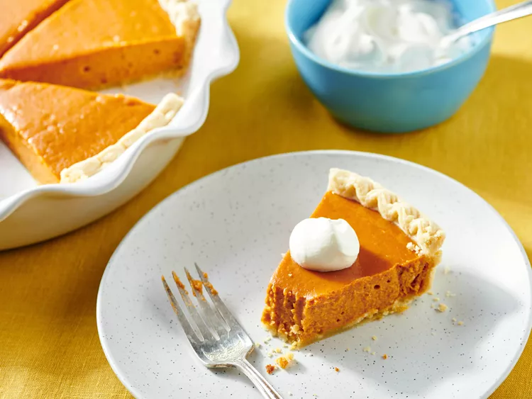

Perfect Pumpkin Pie

Description
The one and only pumpkin pie recipe! Proof that a good recipe doesn't necessarily need to be a complicated one — you
get a great result with canned pumpkin puree and store-bought pie crust. Of course, you can customize it to suit
your preferences by using fresh pumpkin or a homemade pie crust for that from-scratch taste.
How to make Pumpkin Pie:
You'll find the full, step-by-step recipe below — but here's a brief overview of what you can expect:
- Make the filling.
- Pour the mixture into the crust.
- Bake for 15 minutes, then reduce the heat and continue baking.
Ingredients
- 1 (15 ounce) can pumpkin puree
- 1 (14 ounce) can Eagle Brand Sweetened Condensed Milk
- 2 large eggs
- 1 teaspoon ground cinnamon
- ½ teaspoon ground ginger
- ½ teaspoon ground nutmeg
- ½ teaspoon salt
- 1 (9 inch) unbaked pie crust
Directions
- Gather all ingredients and preheat the oven to 425 degrees F (220 degrees C).
- Whisk pumpkin puree, condensed milk, eggs, cinnamon, ginger, nutmeg, and salt together in a medium bowl until smooth.
- Pour into crust. Bake in the preheated oven for 15 minutes.
- Reduce oven temperature to 350 degrees F (175 degrees C) and continue baking until a knife inserted 1 inch from the crust
comes out clean, 35 to 40 minutes. Let cool before serving.
- Enjoy!